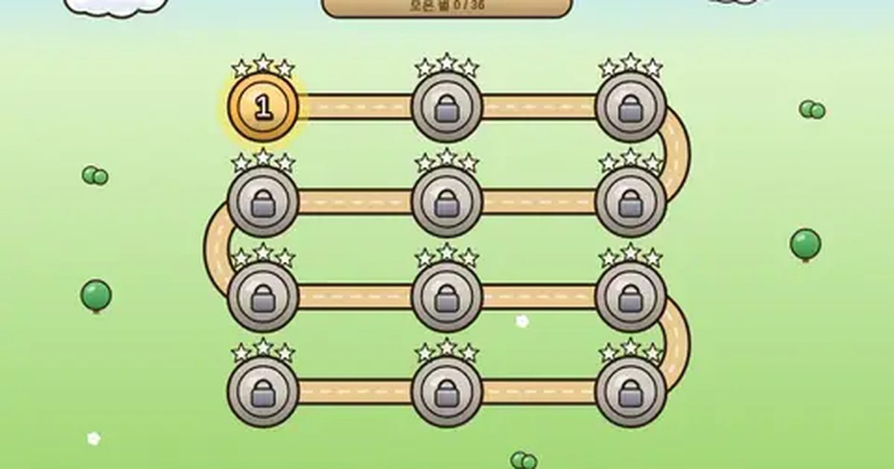

알콩달콩 농장
Cozy Farm
농장 경영 · 시간 도전무료설치 없음폰 · PC
▶ 지금 바로 하기로그인 없이 브라우저에서 바로 시작돼요
어떤 게임인가요?
풀을 심어 동물을 먹이고, 달걀·우유·양털을 주워 빵·치즈·옷감으로 가공해 트럭으로 팔아요. 곰이 오면 연타로 가둬요! 빨리 목표를 채울수록 별이 많아요.
목표 · 단계마다 정해진 목표(달걀 몇 개, 빵 몇 개, 금화 얼마)를 채우면 성공. 빨리 채울수록 별이 많아요 (12단계 · 별 36개).
게임 방법
- 빈 풀밭을 누르면 풀이 자라요. 우물 물 1칸이 들어요. 물이 떨어지면 우물을 눌러 다시 퍼 올리세요.
- 배고픈 동물(머리 위 노랑·빨강 점)은 풀을 찾아 먹어요. 너무 오래 굶으면 떠나요.
- 동물이 떨어뜨린 달걀·우유·양털을 눌러 창고에 담아요. 오래 두면 사라져요 (깜빡이면 곧 사라짐).
- 공방(빵집·치즈 공방·베틀)을 지으면 재료를 더 비싼 물건으로 가공해요.
- 트럭을 누르면 창고 물건을 모두 싣고 시장에 가서 금화로 바꿔 와요.
- 곰이 오면 동물을 노려요. 여러 번 눌러 우리에 가두고, 우리째 팔 수 있어요.
등장하는 것들
- 달걀 · 우유 · 양털 · 닭 · 소 · 양이 생산
- 빵 · 치즈 · 옷감 · 공방에서 가공 · 비싸게 팔림
- 우물 · 풀 1번 = 물 1칸
- 곰 · 여러 번 눌러 가두기
공략 팁
- 처음엔 닭을 한 마리 더 사서 달걀을 빨리 모으세요.
- 풀은 동물이 많이 다니는 가운데에 넉넉히. 물은 미리미리 퍼 두세요.
- 창고가 꽉 차면 줍지 못해요. 트럭이 돌아오면 바로 또 보내세요.
이런 게임도 있어요
 미니 축구축구 · 4:4 · 1P/2P
미니 축구축구 · 4:4 · 1P/2P 몬스터 서바이벌생존 · 자동 공격
몬스터 서바이벌생존 · 자동 공격 한 획 한복한붓그리기 · 꾸미기
한 획 한복한붓그리기 · 꾸미기 두더지 팡팡반사신경 · 60초
두더지 팡팡반사신경 · 60초 돌팔매 대결턴제 · 1P/2P
돌팔매 대결턴제 · 1P/2P 단짝 줄넘기협동 · 혼자 두 손 / 둘이서
단짝 줄넘기협동 · 혼자 두 손 / 둘이서